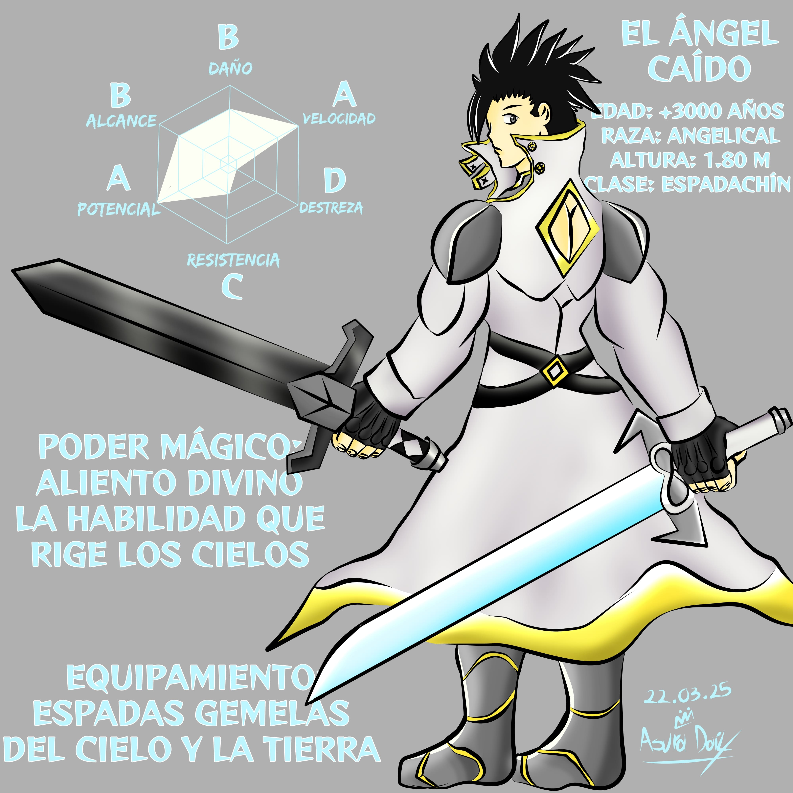
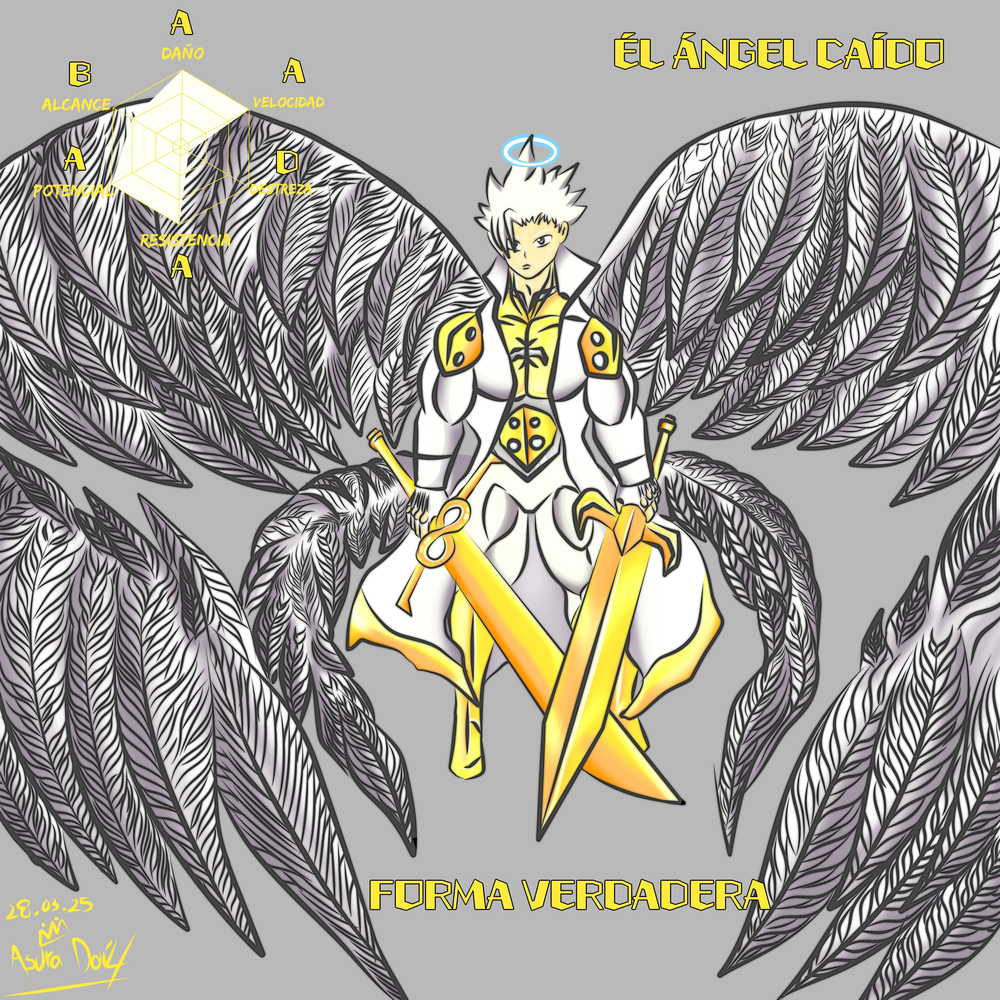
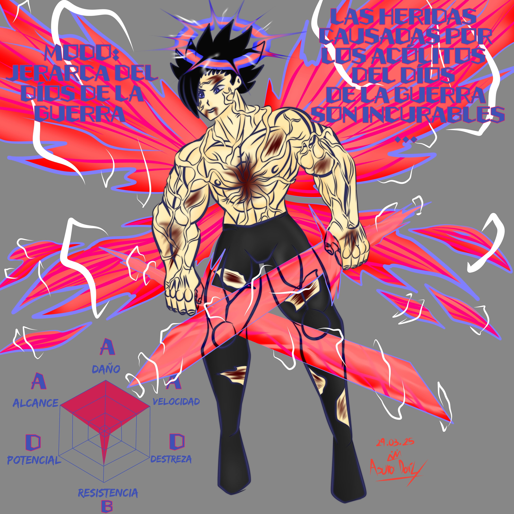

El Ángel Caido, el único que pudo superar la fuerza de
“Invicto". El más
joven de la raza angelical quienes poseen dotes
de curación y purificación fueron la especie más cercana a los
Dioses y son inmunes al veneno, a las toxinas,
las maldiciones y pueden sobrevivir sin problemas a condiciones
inclementes incluyendo el vacío del espacio.
Su madre murió a manos de un usuario magico humano, al sentir
que la vida de su madre se desvanecía hizo uso de su
omnipresencia para llegar al lugar y acabar con
el culpable de dicho acto, comprobando con ello que dicho asesino
no había ganado por ser más fuerte sino porque su madre fue incapaz
de ir en serio contra seres tan frágiles. Asumirá la culpa del
crimen para proteger el honor de su madre, ganándo el odio de su
hermano y la aprobación de la gobernante de su raza quien con su
omnisciencia era la única testigo de aquel suceso.
Sin embargo aun conociendo la verdad se vio obligada a privarlo de su
divinidad y desterrarlo al plano terrenal para guardar las apariencias
y protegerlo de sus demas congeneres.
Tras vagar por milenios en el cosmos acabaría con cada
duelista que se encontraba, en algún momento sería
contemplado por la elemental de viento quien le ofrecería
volverse su campeón para participar como su representante
en el juego de los elementos, ante su negativa la elemental
le desafiara a un duelo de velocidad, el cual terminaría cuando
la elemental atrapara al ángel, esta persecución duraría cientos
de años gracias a su alta vitalidad recorrieron el vasto cosmos
por demasiado tiempo, tanto que la guerra contra los demonios
había alcanzado un punto crítico en que no había un rincón en el mundo
que escapara del conflicto. Ante la amenaza y movidos por el cariño
que habían construido a través de su larga carrera decidieron
posponer su duelo. La elemental regresaría a sus territorios
acompañada de su rival quien blandió su espada en incontables batallas,
hasta la caída del gran rey demonio. Aunque el peligro no terminaría
con su caída pues pronto llegaría un general demonio cuya arma convertía
en demonio a quienes cortaba con ella, la caída de su soberano había
hecho que el ángel y su compañera bajarán la guardia al punto que
cuando se percataron de su llegada ya se había formado una legión
demoníaca que arrasaba sus tierras.
La compasión de la elemental haría que no usaran fuerza letal ante
los convertidos, ya que quería encontrar la manera de regresarlos a
la normalidad. A regañadientes el ángel haría uso de su super velocidad
para incapacitar momentáneamente al ejército demoníaco.
Lo que terminó por fatigar sus fuerzas en consecuencia no llegaría
a tiempo a auxiliar a su amada quien sería emboscada por el general
demoníaco, aunque sus fuerzas eran equivalentes el demonio habría
manipulado a uno de los humanos que se refugiaba en el templo del
viento para atacar a la santa del viento. Herida sería fácilmente
abrumada por su demoníaco enemigo quien le cortaría para convertirla
en un demonio de alto nivel. Antes de ceder a la maldición y consciente
de su final dejaría su poder mágico como un regalo para el guerrero
que amo. Quien apenas llegaría a tiempo para su despedida, tras la
cual haría uso de su propia arma para acabar con su existencia antes
de volverse contra lo que amo.
El ángel no podría afrontarlo y cedería ante la ira. La vida le había
traído momentos que no pudo superar e intoxicó sus sentimientos, lento
el cambio se produciría lento pero en su despertar violento quebró con
todo su pasado e infecto sus pensamientos. Cansado de pasar por la
humillación de no poder resguardar a los suyos ante la perversión.
Exterminaria al ejército demoníaco junto a su general con ayuda de
la espada de la santa que podía matar de un corte a cualquier demonio
terminaría por hacerse con el arma de su enemigo, ya que había recibido
el poder de su amada sería incapaz de acabar con su existencia por lo que
desde entonces vago por el mundo desafiando a oponentes fuertes a quienes
convierte en demonios esperando el dia que surgiera uno capaz de eliminarlo,
aunque naturalmente ya era muy fuerte igual dominó el arte de la espada,
sin embargo su arrogancia y confianza le hace prescindir de sus técnicas
especiales y atacar únicamente con estocadas simples pero letales.
Al llegar a la ciudad de los guerreros sería encerrado por dos de los
héroes que subyugaron al rey de los demonios en el coliseo del cielo.
En la ciudad de los guerreros existe un coliseo flotante
que espera a contendientes formidables. Un Ángel que ha
fracasado toma el rol de verdugo y ejecuta a quienes aceptan
su reto, las hadas de viento han prometido la habilidad de vuelo a
quien logre la gran hazaña de derrotar al imbatible espadachín de
los cielos. Un reto dirigido únicamente hacia los más osados.